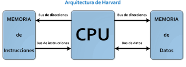

La arquitectura de computadoras es el diseño y la organización de un sistema para un equipo de cómputo. Es un modelo y descripción de cada función, así como los requerimientos y las implementaciones de diseño para varias partes del equipo de cómputo.

Estas arquitecturas se desarrollaron en las primeras computadoras electromecánicas y de
tubos de vacío. Hay dos arquitecturas distintas relacionadas con el uso y distribución
de la memoria: Arquitectura de Jonh Von Neumman y Arquitectura Harvard
Arquitectura Von Neumann:
La unidad central de proceso (CPU), está conectada a una memoria principal única (casi
siempre sólo RAM) donde se guardan las instrucciones del programa y los datos. A dicha
memoria se accede a través de un sistema interconexión de buses único (control,
direcciones y datos). En un sistema con arquitectura Von Neumann el tamaño de la unidad
de datos o instrucciones está fijado por el ancho del bus que comunica la memoria con la
CPU. El tener un único bus hace que el microprocesador sea más lento en su respuesta, ya
que no puede buscar en memoria una nueva instrucción mientras no finalicen las
transferencias de datos de la instrucción anterior.
Componentes principales de Von Neumann:
- Unidad de Memoria.
- Unidad de Entrada/Salida.
- Unidad de Control.
- Unidad de Procesamiento.
- Registros de Programas.
- Unidad Aritmética Lógica.

Modelo Harvard:
Esta arquitectura utiliza los Micro controladores, tiene la unidad central de proceso (CPU) conectada a dos
memorias (una con las instrucciones y otra con los datos) por medio de dos buses diferentes.
Una de las memorias contiene solamente las instrucciones del programa (Memoria de Programa), y la otra sólo
almacena datos (Memoria de Datos).
Ambos buses son totalmente independientes lo que permite que la CPU pueda acceder de forma independiente y
simultánea a la memoria de datos y a la de instrucciones.
El tamaño de las instrucciones no está relacionado con el de los datos, y por lo tanto puede ser optimizado
para que cualquier instrucción ocupe una sola posición de memoria de programa, logrando así mayor velocidad y
menor longitud de programa.
La principal desventaja de esta arquitectura; el bus de datos y direcciones único se convierte en un cuello de
botella por el cual debe pasar toda la información que se lee de o se escribe a la memoria, obligando a que
todos los accesos a esta sean secuenciales.
Limita el grado de paralelismo (acciones que se pueden realizar al mismo tiempo) y por lo tanto, el desempeño
de la computadora.

Es una de las tecnologías utilizadas para realizar la segmentación o paralelismo. Divide el procesador, en
etapas, procesa una instrucción diferente en cada una y trabaja con varias a la vez.
Pueden trabajar de forma paralela, en diferentes instrucciones, utilizando una cola de instrucciones para su
comunicación, denominado entubamiento.
La técnica de implementación clave utilizada para hacer CPU.
La dependencia de datos y de control, que tiene como efecto la disminución del rendimiento del
pipelining.
La segmentación de cauce (pipelining) es una forma efectiva de organizar el hardware del CPU para realizar
más de una operación al mismo tiempo.
Consiste en descomponer el proceso de ejecución de las instrucciones en fases o etapas que permitan una
ejecución simultánea.
Las etapas están conectadas, cada una a la siguiente, para formar una especie de cauce las instrucciones se
entran por un extremo, son procesadas a través de las etapas y salen por el otro. La productividad de la
segmentación está determinada por la frecuencia con que una instrucción salga del cauce.

La arquitectura de multiprocesamiento (MP) se refiere a la organización de un sistema informático que cuenta
con múltiples unidades centrales de procesamiento (CPU) trabajando en conjunto para ejecutar
tareas.
Multiprocesamiento simétrico (SMP):
Se caracteriza por tener dos o más CPUs idénticas que comparten una memoria principal y un espacio de
direcciones.
Todas las CPUs tienen el mismo acceso a los recursos del sistema y pueden ejecutar cualquier tarea.
Es la arquitectura MP más común y se utiliza en servidores, estaciones de trabajo y computadoras personales de
alto rendimiento.
Multiprocesamiento asimétrico (AMP):
Emplea CPUs diferentes que pueden tener arquitecturas, velocidades y conjuntos de instrucciones
distintos.
Cada CPU está especializada en la ejecución de tareas específicas.
Se utiliza en sistemas de alto rendimiento que requieren un procesamiento especializado, como
supercomputadoras y servidores de aplicaciones específicas.
- SISO : (Single Instruction, Single Operand) computadoras. Monoprocesador
- SIMO : (Single Instruction, Multiple Operand) procesadores vectoriales, Exenciones MMX
- MISO : (Multiple Instruction, Single Operand) No implementado
- MIMO : (Multiple Instruction, Multiple Operand) sistemas SMP, Clusters, GPUs
Clusters
Conjuntos de computadoras independientes conectadas en una red de área local o por un bus de interconexión y
que trabajan cooperativamente.
Con un sistema de procesamiento paralelo o distribuido.
Es clave en su funcionamiento contar con un sistema operativo y programas de aplicación capaces de distribuir
el trabajo entre las computadoras de la red.
Se debe tener cuidado al implementar la aplicación, ya que si los datos que hay que pasar de un procesador a
otro son demasiados, el tiempo empleado en pasar información de un nodo a otro puede sobrepasar a la ganancia
que se tiene al dividir el trabajo entre varios procesadores.

El análisis de componentes (AC) es una técnica estadística multivariante utilizada para simplificar y explorar conjuntos de datos complejos. Su objetivo principal es reducir la dimensionalidad de los datos, transformando un conjunto de variables originales correlacionadas en un nuevo conjunto de variables no correlacionadas denominadas componentes principales.

RISC (Reduced Instruction Set Computer) y CISC (Complex Instruction Set Computer) son dos filosofías de diseño
de conjuntos de instrucciones para computadoras. La principal diferencia entre ambas radica en la complejidad
de las instrucciones
Arquitectura RISC (Reduced Instruction Set Computer):
Conjunto de instrucciones simple: Las instrucciones RISC son generalmente más sencillas y realizan una única
operación básica por instrucción.
Diseño basado en registros: Las operaciones se realizan principalmente en registros internos de la CPU, lo que
reduce la necesidad de acceder a la memoria principal y mejora el rendimiento.
Ciclo de reloj único: La mayoría de las instrucciones RISC se pueden ejecutar en un único ciclo de reloj de la
CPU.
Menor número de instrucciones: El conjunto de instrucciones RISC suele ser más pequeño que el de CISC, lo que
facilita su aprendizaje y implementación.

CISC (Complex Instruction Set Computer):
Conjunto de instrucciones complejo: Las instrucciones CISC pueden realizar operaciones más complejas en una
sola instrucción, lo que reduce el número total de instrucciones necesarias para completar una
tarea.
Diseño basado en memoria: Las operaciones pueden realizarse directamente en la memoria principal, lo que puede
ser más eficiente para ciertas tareas.
Ciclo de reloj variable: Las instrucciones CISC pueden requerir múltiples ciclos de reloj para
completarse.
Mayor número de instrucciones: El conjunto de instrucciones CISC suele ser más grande que el de RISC, lo que
puede dificultar su aprendizaje e implementación.
La Unidad Central de Procesamiento (CPU), también conocida como procesador o microprocesador, es el cerebro de
un ordenador, teléfono inteligente y otros dispositivos programables. Es un circuito digital que se encarga de
interpretar las instrucciones y ejecutar los cálculos necesarios para que el dispositivo funcione.
Partes del CPU:
- Unidad de control (CU): Controla el flujo de datos y las instrucciones dentro de la CPU.
- Unidad aritmético-lógica (ALU): Realiza operaciones aritméticas y lógicas.
- Caché: Almacena datos e instrucciones a los que la CPU accede con frecuencia para acelerar el rendimiento.
- Bus: Conecta la CPU con otros componentes del sistema, como la memoria RAM y los dispositivos de entrada/salida.
La Unidad Aritmético Lógica (ALU), también conocida como unidad aritmético-lógica, es un circuito digital que
se encuentra en la Unidad Central de Procesamiento (CPU) de un ordenador, teléfono inteligente y otros
dispositivos programables.
La ALU recibe dos operandos (números binarios) y una instrucción que indica qué operación debe realizar. La
ALU luego realiza la operación especificada y almacena el resultado en un registro.
Las partes de la ALU:
- Unidad de control: Controla el flujo de datos y las instrucciones dentro de la ALU.
- Circuito aritmético: Realiza operaciones aritméticas.
- Circuito lógico: Realiza operaciones lógicas.
- Registros: Almacenan datos temporales que la ALU necesita para su funcionamiento.

Los registros de un procesador son pequeñas unidades de memoria de alta velocidad que se encuentran dentro del
núcleo del procesador. Son utilizados para almacenar datos e instrucciones que la CPU necesita para su
funcionamiento. Los registros son mucho más rápidos que la memoria RAM, por lo que la CPU puede acceder a
ellos mucho más rápido.
Registros de uso general (GPRs): Estos registros pueden ser utilizados para almacenar cualquier tipo de dato,
como números, caracteres o direcciones de memoria.
Registros de propósito específico (SPRs): Estos registros están diseñados para realizar tareas específicas,
como controlar el flujo de instrucciones o almacenar el estado del procesador.
Registros de índice: Estos registros se utilizan para almacenar direcciones de memoria.
Registros de base: Estos registros se utilizan en conjunto con los registros de índice para calcular
direcciones de memoria.
Registros de pila: Estos registros se utilizan para almacenar datos que se utilizan temporalmente, como los
argumentos de las funciones o las variables locales.
Registros de estado: Estos registros almacenan información sobre el estado del procesador, como el modo de
operación o el estado de las interrupciones.

Los buses del procesador son conjuntos de líneas de comunicación que permiten la transferencia de datos entre
el núcleo del procesador y otros componentes del sistema, como la memoria y los dispositivos de
entrada/salida. Los buses son esenciales para el funcionamiento del procesador, ya que permiten que el
procesador acceda a los datos e instrucciones que necesita para realizar sus operaciones.
- Bus de datos: El bus de datos es el responsable de transferir los datos reales entre el procesador y otros componentes del sistema. El ancho del bus de datos determina la cantidad de datos que se pueden transferir al mismo tiempo.
- Bus de direcciones: El bus de direcciones es el responsable de indicar la ubicación de la memoria o el dispositivo de E/S al que se quiere acceder. El ancho del bus de direcciones determina la cantidad de memoria o dispositivos de E/S que se pueden direccionar.
- Bus de control: El bus de control es el responsable de enviar señales de control entre el procesador y otros componentes del sistema. Estas señales de control se utilizan para sincronizar las transferencias de datos, indicar el tipo de operación que se debe realizar y controlar el estado de los dispositivos.

En la arquitectura de computadoras, la memoria se refiere a un conjunto de dispositivos que almacenan datos e instrucciones de forma temporal o permanente. La memoria es esencial para el funcionamiento de una computadora, ya que permite que la CPU acceda a los datos e instrucciones que necesita para realizar sus operaciones.
- Memoria principal (RAM): La memoria principal, también conocida como memoria de acceso aleatorio (RAM), es un tipo de memoria volátil que almacena los datos e instrucciones que la CPU está utilizando actualmente. La RAM es muy rápida, pero se borra cuando se apaga la computadora.
- Memoria caché: La memoria caché es un tipo de memoria de alta velocidad que se utiliza para almacenar datos e instrucciones que la CPU utiliza con frecuencia. La memoria caché es más pequeña que la RAM, pero es mucho más rápida.
- Memoria secundaria: La memoria secundaria es un tipo de memoria no volátil que se utiliza para almacenar datos e instrucciones de forma permanente. La memoria secundaria es más lenta que la RAM, pero es mucho más barata y puede almacenar mucha más información. Algunos ejemplos de memoria secundaria incluyen discos duros, unidades de estado sólido (SSD) y discos ópticos.
- Memoria ROM: La memoria ROM, también conocida como memoria de solo lectura, es un tipo de memoria no volátil que almacena datos e instrucciones que no se pueden modificar. La memoria ROM se utiliza para almacenar firmware y otros datos que no cambian con frecuencia.
Jerarquía de Memoria
La memoria en una computadora se organiza en una jerarquía de acuerdo a su velocidad y costo.
- Memoria caché: La CPU primero busca los datos e instrucciones en la memoria caché.
- Memoria RAM: Si los datos e instrucciones no están en la memoria caché, la CPU los busca en la memoria RAM.
- Memoria secundaria: Si los datos e instrucciones no están en la RAM, la CPU los busca en la memoria secundaria.
- Memoria ROM: Si los datos e instrucciones no están en la memoria secundaria, la CPU los busca en la memoria ROM.
La memoria es un componente fundamental de cualquier computadora, ya que permite almacenar datos e instrucciones que son esenciales para su funcionamiento. El manejo de la memoria se refiere a las técnicas y estrategias que se utilizan para administrar de manera eficiente la memoria disponible en un sistema informático.
La memoria principal, también conocida como memoria de acceso aleatorio (RAM), es un tipo de memoria volátil
que almacena datos e instrucciones que se están utilizando actualmente por el procesador y otros programas. La
RAM es rápida, pero pierde su contenido cuando se apaga la computadora o se reinicia.
Volatilidad: La RAM es una memoria volátil, lo que significa que pierde su contenido cuando se pierde la
alimentación. Esto se debe a que los datos se almacenan en condensadores que se descargan cuando se apaga la
computadora.
Velocidad: La RAM es un tipo de memoria muy rápido, lo que permite al procesador acceder a los datos de manera
rápida y eficiente. Esto es esencial para el buen rendimiento del sistema.
Capacidad: La capacidad de la RAM se mide en gigabytes (GB). Las computadoras modernas generalmente tienen de
4 GB a 32 GB de RAM, o incluso más.
Acceso aleatorio: La RAM se denomina memoria de acceso aleatorio porque el procesador puede acceder a
cualquier ubicación de la memoria en cualquier momento. Esto es diferente de la memoria secundaria, como los
discos duros, donde el procesador debe acceder a los datos en un orden secuencial.
La memoria caché es un tipo de memoria de alta velocidad que almacena una copia de los datos e instrucciones
que se utilizan con más frecuencia. Se encuentra entre la memoria principal (RAM) y el procesador, y permite
acceder a los datos de manera más rápida.
Velocidad: La memoria caché es mucho más rápida que la memoria principal, lo que permite al procesador acceder
a los datos de manera más rápida y eficiente.
Tamaño: La memoria caché es mucho más pequeña que la memoria principal. Esto se debe a que es más cara de
fabricar que la memoria principal.
Volatilidad: La memoria caché es volátil, lo que significa que pierde su contenido cuando se apaga la
computadora. Sin embargo, esto no es un problema importante, ya que la memoria caché se rellena
automáticamente con los datos más recientes cuando se enciende la computadora.
El manejo de la entrada/salida (E/S) se refiere a las técnicas y mecanismos que se utilizan para transferir datos entre una computadora y sus dispositivos periféricos, como teclados, monitores, impresoras, discos duros, unidades de estado sólido y redes. Es un componente esencial de cualquier sistema informático, ya que permite a los usuarios interactuar con la computadora y a la computadora interactuar con el mundo exterior.
La Entrada/Salida Programada (E/S Programada) es un método de transferencia de datos entre la CPU y los dispositivos periféricos en el que el programador tiene un control completo sobre el proceso. En este método, el programa especifica explícitamente todas las instrucciones necesarias para realizar la operación de E/S, incluyendo:
- Selección del dispositivo periférico: El programa identifica el dispositivo periférico con el que se desea comunicar.
- Operación de E/S: El programa especifica la operación de E/S que se desea realizar, como leer o escribir datos.
- Dirección de memoria: El programa especifica la dirección de memoria donde se encuentran los datos que se van a transferir.
- Cantidad de datos: El programa especifica la cantidad de datos que se van a transferir.
La Entrada/Salida mediante interrupciones (E/S por interrupciones) es un método de transferencia de datos
entre la CPU y los dispositivos periféricos en el que el dispositivo periférico genera una interrupción cuando
necesita atención del procesador. Esto permite que el procesador maneje varios dispositivos periféricos al
mismo tiempo y reduce la cantidad de tiempo que el procesador pasa esperando a que los dispositivos
periféricos estén listos.
Pasos en la E/S por interrupciones:
El dispositivo periférico genera una interrupción: Cuando el dispositivo periférico necesita atención del
procesador, genera una interrupción. Esta interrupción señala al procesador que el dispositivo periférico
tiene datos para transferir o necesita servicio.
El procesador guarda su estado actual: El procesador guarda su estado actual, incluyendo el registro del
programa contador y los registros de uso general, en la pila.
El procesador maneja la interrupción: El procesador determina la fuente de la interrupción y salta a la rutina
de servicio de interrupciones correspondiente. La rutina de servicio de interrupciones maneja la transferencia
de datos entre la memoria y el dispositivo periférico.
El procesador restaura su estado: Una vez que se completa la rutina de servicio de interrupciones, el
procesador restaura su estado anterior y continúa con la ejecución del programa.

El Acceso Directo a Memoria (DMA) es una técnica que permite a un dispositivo periférico transferir datos
directamente a la memoria principal del sistema, sin necesidad de la intervención del procesador central
(CPU). Esto significa que el procesador puede continuar con otras tareas mientras se realiza la transferencia
de datos, lo que puede mejorar significativamente el rendimiento del sistema.
Funcionamiento del DMA:
- Solicitud de DMA: El dispositivo periférico solicita una transferencia de DMA al controlador DMA.
- Asignación de recursos: El controlador DMA asigna los recursos necesarios para la transferencia, como los canales DMA y la memoria.
- Configuración del controlador DMA: El controlador DMA se configura con la información de la transferencia, como la dirección de origen (dispositivo periférico), la dirección de destino (memoria principal) y la cantidad de datos a transferir.
- Inicio de la transferencia: El controlador DMA inicia la transferencia de datos directamente entre el dispositivo periférico y la memoria principal.
- Supervisión de la transferencia: El controlador DMA supervisa la transferencia de datos y genera una interrupción cuando se completa.
- Manejo de la interrupción: El procesador maneja la interrupción y actualiza el estado del sistema.
Los canales de E/S son unidades de hardware que proporcionan una interfaz de alto nivel para la E/S.
Simplifican el proceso de E/S al encapsular las complejidades de la transferencia de datos entre la CPU y los
dispositivos periféricos. Los canales de E/S pueden manejar una variedad de tareas de E/S, como:
Transferencia de datos: Los canales de E/S pueden transferir datos entre la memoria principal y los
dispositivos periféricos de manera eficiente.
Detección de errores: Los canales de E/S pueden detectar errores durante la transferencia de datos y tomar las
medidas adecuadas para corregirlos o notificarlos al software.
Control de dispositivos: Los canales de E/S pueden controlar dispositivos periféricos, como configurarlos,
iniciar y detener operaciones, y monitorear su estado.
Tipos de canales:
- Canales programados: Los canales programados requieren que el programador especifique explícitamente las instrucciones necesarias para realizar la operación de E/S.
- Canales por DMA: Los canales por DMA (Acceso Directo a Memoria) permiten que los dispositivos periféricos transfieran datos directamente a la memoria principal sin la intervención del procesador.
Un bus, también conocido como canal, es un sistema digital que permite la transferencia de datos entre los componentes de una computadora o entre computadoras. Se compone de varias líneas físicas (cables o pistas en un circuito impreso) por las cuales se transmiten los datos, las direcciones de memoria y las señales de control.
Bus de datos:
Transporta los datos binarios que representan la información que se procesa en la computadora.
Bus de direcciones:
Función: Indica la ubicación de memoria o el dispositivo periférico de origen o destino de los datos que
viajan por el bus de datos.
Bus de control:
Transporta las señales de control que coordinan las transferencias de datos por el bus de datos.
Bus frontal (FSB o Front Side Bus):
Conecta la CPU con la memoria principal (RAM) y el chipset.
Bus de expansión:
Permite conectar tarjetas de expansión (gráficas, de sonido, de red, etc.) a la placa base.
Bus de E/S (Entrada/Salida):
Conecta la CPU con los dispositivos periféricos (teclado, mouse, impresora, disco duro, etc.).
Bus de red:
Permite la comunicación entre computadoras y otros dispositivos en una red.
La estructura de un bus define la organización física y lógica de sus componentes, permitiendo la
transferencia eficiente de datos entre los elementos del sistema informático.
Líneas de datos: Son las vías por las que se transmiten los datos binarios que representan la información. El
ancho del bus de datos determina la cantidad de bits que se pueden transferir simultáneamente, lo que afecta
la velocidad de transmisión. Los buses de datos modernos pueden tener anchos de 64, 128, 256 o incluso 512
bits.
Líneas de direcciones: Indican la ubicación de memoria o el dispositivo periférico de origen o destino de los
datos que viajan por el bus de datos. El ancho del bus de direcciones determina el rango de direcciones que
puede acceder el sistema. Un bus de direcciones más ancho permite acceder a una mayor cantidad de memoria o
dispositivos.
Líneas de control: Transportan las señales que coordinan las transferencias de datos por el bus de datos.
Estas señales indican el tipo de operación que se está realizando (lectura, escritura, selección de
dispositivo, interrupciones, etc.) y sincronizan el flujo de información entre los componentes.
Arbitraje de bus: Es el mecanismo que regula el acceso al bus cuando varios dispositivos solicitan usarlo
simultáneamente. Existen diferentes estrategias de arbitraje, como el round robin, la prioridad fija o el bus
maestro-esclavo.
En el mundo de la computación, los buses funcionan como vías de comunicación que permiten la transferencia de
información entre los diferentes componentes de un sistema. Para optimizar el rendimiento y la eficiencia, se
suele emplear una estructura jerárquica de buses, donde buses de distintos niveles se interconectan para
formar una red de comunicación organizada.
Bus interno del procesador (CPU): Es el bus más rápido del sistema y se encarga de la comunicación interna
entre los componentes del procesador, como la caché y las unidades de ejecución. Su velocidad es crucial para
el rendimiento general del sistema.
Bus frontal (FSB o Front Side Bus): Conecta la CPU con la memoria principal (RAM) y el chipset. Es un bus
crítico para el sistema, ya que determina la velocidad de intercambio de datos entre estos componentes. Su
ancho y velocidad son factores determinantes en el desempeño general de la computadora.
Bus de sistema: También conocido como bus local, conecta el chipset con los buses de expansión y los
dispositivos periféricos rápidos, como tarjetas gráficas y discos duros de alta velocidad. Su ancho de banda
debe ser suficiente para manejar el tráfico de datos de estos dispositivos.
Buses de expansión: Permiten conectar tarjetas de expansión (gráficas, de sonido, de red, etc.) a la placa
base. Existen diferentes tipos de buses de expansión, como PCI, PCI-Express y AGP, cada uno con sus
características y velocidades.
Buses de E/S (Entrada/Salida): Conectan la CPU con los dispositivos periféricos más lentos, como teclado,
mouse, impresora, etc. Buses comunes de E/S incluyen ISA, PCI y USB.
las interrupciones (IRQ, Interrupt Request) son señales que ciertos dispositivos o eventos envían a la CPU
para solicitar su atención inmediata. Estas señales permiten que la CPU suspenda temporalmente la ejecución de
la tarea actual para atender la solicitud, y luego retome la tarea desde donde la dejó una vez que la
solicitud se haya completado.
Interrupciones por hardware: Son generadas por dispositivos físicos, como teclados, ratones, discos duros o
redes, cuando necesitan la atención de la CPU.
Interrupciones por software: Son generadas por el propio software, ya sea por errores en la ejecución del
programa o por la necesidad de realizar tareas específicas, como la gestión del tiempo o la atención a eventos
del sistema operativo.